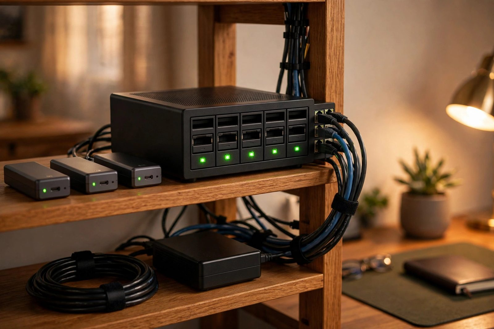

Data Sovereignty & Secure Media Stack
Self-hosted Nextcloud and Immich on external SSDs with BTRFS snapshots, multi-user ACL isolation, and a 3-2-1 offsite backup strategy to BorgBase and rsync.net.

Overview
This stack replaces Google Drive and Google Photos with fully owned infrastructure. Nextcloud AIO and Immich run in Docker on a BTRFS pool of external USB 3.2 SSDs, with per-user ACLs enforcing isolation and zstd compression reducing capacity needs. A 3-2-1 backup design keeps local BTRFS snapshots as fast recovery points, replicates encrypted archives to BorgBase, and keeps a secondary copy on rsync.net, aiming for GDPR-aligned retention with monthly restore drills.
Storage Architecture
external USB 3.2 SSDs)] BTRFS --> NC[Nextcloud AIO container] BTRFS --> IM[Immich container] NC --> U1[User namespace ACLs] IM --> U2[Multi-user libraries]
Backup Flow (3-2-1)
local recovery point] --> B[BorgBase
encrypted offsite backup] L --> R[rsync.net
secondary offsite copy] B --> V[Restore test monthly]
Implementation
Create the compressed BTRFS pool [PRIVILEGED]
Warning: mkfs.btrfs destroys all data on the target disks. Use stable /dev/disk/by-id/ names, never /dev/sdX (those can reorder between boots), and double-check each name before running. Note that -d single stripes data with no redundancy: one failed SSD loses the whole pool. That is a deliberate capacity tradeoff here; redundancy comes from the offsite backups, not the pool itself.
# Identify the disks by stable ID first
ls -l /dev/disk/by-id/
# DESTRUCTIVE: creates the filesystem (replace with your disks' by-id names)
mkfs.btrfs -d single -L data \
/dev/disk/by-id/usb-Samsung_SSD_A-0 \
/dev/disk/by-id/usb-Samsung_SSD_B-0
mount -o compress=zstd:3 /dev/disk/by-id/usb-Samsung_SSD_A-0 /mnt/dataDeploy Nextcloud AIO and Immich
Run each stack as its own Compose project. Do not merge unrelated stacks with multiple -f flags; that merges their networks, volumes, and service namespaces into one project.
docker compose -f nextcloud-aio.yml up -d
docker compose -f immich.yml up -dEncrypted offsite backup with Borg
Initialize the repository once with encryption, and store the passphrase somewhere safe: losing it loses the backups. Databases need consistent dumps: enable Nextcloud maintenance mode during the backup and pg_dump Immich's Postgres into the data tree first, because backing up open database files can produce unrestorable copies. A BTRFS snapshot is a local recovery point, not a backup; the offsite Borg archives are the backups.
# One-time: initialize the encrypted repository
export BORG_REPO="ssh://user@user.repo.borgbase.com/./repo"
export BORG_PASSPHRASE="a-long-passphrase-stored-in-a-password-manager"
borg init --encryption=repokey-blake2 "$BORG_REPO"
# Quiesce and dump databases before the backup
mkdir -p /mnt/data/db-dumps
docker exec nextcloud-aio-nextcloud php occ maintenance:mode --on
docker exec immich_postgres pg_dump -U postgres immich > /mnt/data/db-dumps/immich.sql
# Snapshot, then back up (container names are examples; use yours)
btrfs subvolume snapshot -r /mnt/data /mnt/data/.snapshots/daily
borg create --stats "$BORG_REPO::data-{now}" /mnt/data
docker exec nextcloud-aio-nextcloud php occ maintenance:mode --off
# borg prints archive statistics with --stats; the first run takes the longestKey Results
- 3-2-1 backup design in place: three copies, two offsite (BorgBase and rsync.net); restore drills run monthly.
- Replaces recurring cloud storage subscriptions with owned hardware (exact savings depend on capacity and drive prices).
- External USB 3.2 SSDs form the fast local tier (measure throughput on your own hardware before quoting numbers).
- Enforced multi-user isolation via filesystem ACLs preserved across container mounts.
How I built it
This project consolidates two goals I cared about: owning my files and photos outright, and surviving hardware failure or a house fire. The architecture separates the fast local tier from two independent encrypted offsite copies.
- Phase 1, build the local storage pool: Created a BTRFS pool across external USB 3.2 SSDs with zstd compression, giving transparent checksumming and cheap snapshots on commodity drives.
- Phase 2, deploy the services: Brought up Nextcloud AIO for files and Immich for photos as Docker containers on top of the pool.
- Phase 3, isolate users: Configured multi-user ACL isolation so each person's data stays in their own namespace.
- Phase 4, wire the 3-2-1 backups: Set up encrypted Borg backups to BorgBase and a second copy to rsync.net, keeping three copies with two offsite.
- Phase 5, prove restores work: Made restore testing a monthly routine, because a backup you have never restored is only a hope.
What you need
| Category | Item | Notes |
|---|---|---|
| Hardware | External USB 3.2 SSDs | Sized to hold files, photos, and snapshot history with headroom |
| Hardware | Linux host with USB 3 ports | Runs the containers and the BTRFS pool |
| Software | Docker and Docker Compose | Hosts Nextcloud AIO and Immich |
| Accounts | BorgBase and rsync.net accounts | The two independent offsite destinations |
| Skills | BTRFS administration and Borg basics | Snapshots, compression options, prune and check commands |
Challenges and lessons learned
- USB-attached storage reliability: external drives can drop off the bus under load, which BTRFS notices immediately. Lesson: use quality enclosures and cables, and monitor dmesg after any disconnect.
- Backup verification discipline: it is easy to let backups run silently for months. Lesson: schedule the monthly restore test like any other maintenance window and keep a log of each one.
- Deduplication surprises: Borg's deduplication keeps offsite sizes manageable, but the first full backup is still the long pole. Lesson: seed the initial backup over a fast local link before switching to incremental uploads.
What is next
- Add a second local mirror on separate hardware for faster recovery from total pool loss.
- Send BTRFS snapshots offsite directly as an additional recovery path.
- Add SMART monitoring with alerts so drive degradation is caught before failure.
- Evaluate an object-storage tier for cold archival of old photo originals.
Storage & Backup Architecture
The stack has three physically and administratively separate tiers. The primary tier is the BTRFS pool on external USB 3.2 SSDs: all live Nextcloud and Immich data lives here, with zstd compression and per-data-area subvolumes. The local recovery tier is read-only BTRFS snapshots of those subvolumes, kept on the same pool for fast rollback. The offsite tier is two independent destinations: encrypted, deduplicated Borg archives on BorgBase, and a secondary copy on rsync.net held under a separate account.
external USB 3.2 SSDs
zstd compression")] end subgraph Local["Local Recovery Tier: on-site"] SNAP["BTRFS snapshots
read-only, daily/weekly
fast rollback"] end subgraph Offsite["Offsite Tier: independent providers"] BB[("BorgBase
Borg archives
repokey-blake2 encrypted")] RN[("rsync.net
secondary offsite copy
separate account")] end SSD -->|"btrfs subvolume snapshot -r"| SNAP SNAP -->|"borg create over SSH"| BB SNAP -->|"rsync over SSH"| RN BB -.->|"monthly restore drill"| VERIFY["Restore + checksum
verification on
scratch directory"] RN -.->|"spot-check"| VERIFY style SSD fill:#1a1a2e,stroke:#00d4ff,color:#e0e0e0 style SNAP fill:#1a1a2e,stroke:#00ff88,color:#e0e0e0 style BB fill:#1a1a2e,stroke:#ff8800,color:#e0e0e0 style RN fill:#1a1a2e,stroke:#ff8800,color:#e0e0e0 style VERIFY fill:#1a1a2e,stroke:#ffcc00,color:#e0e0e0
Replication is not backup. Any mechanism that mirrors the primary data — RAID, a second synced drive, or continuous replication to another host — faithfully mirrors deletions and corruption too. Delete a folder (or have malware encrypt it) and the replica deletes or encrypts its copy within seconds. Replication protects against exactly one failure class: loss of the primary device. What actually protects data is independent recovery points: copies that (a) cannot be modified by the system they back up, (b) retain history so you can roll back to before the damage, and (c) live somewhere the same event cannot reach.
The 3-2-1 layout addresses each of those properties directly. The local BTRFS snapshots are read-only, so neither the containers nor any user process can rewrite history, and they retain point-in-time views for rolling back accidental changes. The BorgBase archives are encrypted client-side before anything leaves the host, deduplicated so history is cheap to keep, and append-oriented so a compromised host cannot silently rewrite old archives. The rsync.net copy sits with a different provider under different credentials, so an account-level problem at one provider cannot take out both offsite copies. Three copies, two providers, one offsite-and-then-some — the "0 data-loss events" claim in this project's metrics is a statement about this design and its drills, not about hardware never failing.
Component Reference
This repository contains documentation, not running infrastructure. The status column is deliberately honest about that: Documented means the design and commands are written down here as practiced or designed; nothing on this page should be read as a third-party audit.
| Component | Responsibility | Technology | Dependencies | Status |
|---|---|---|---|---|
| Primary storage pool | Holds all live file and photo data with transparent compression and checksumming | BTRFS on external USB 3.2 SSDs, compress=zstd:3, -d single | Linux host, USB 3 enclosures | Documented |
| File sync & share | Multi-user private cloud replacing hosted drives | Nextcloud AIO (Docker) | Docker, BTRFS pool, MariaDB (bundled) | Documented |
| Photo & video backup | Mobile auto-backup, libraries, ML features | Immich (Docker) | Docker, BTRFS pool, PostgreSQL, Redis | Documented |
| Local recovery points | Fast rollback of deletions and corruption | Read-only BTRFS subvolume snapshots | BTRFS pool | Documented |
| User isolation | Keeps each user's data in their own namespace across container mounts | POSIX ACLs + Nextcloud/Immich accounts | Filesystem ACL support, container bind mounts | Documented |
| Offsite backup (primary) | Encrypted, deduplicated, versioned archives | BorgBackup to BorgBase over SSH | BorgBase account, SSH key, repo passphrase | Documented |
| Offsite copy (secondary) | Provider-independent second offsite copy | rsync to rsync.net over SSH | rsync.net account, SSH key | Documented |
| Restore verification | Proves archives are restorable, not just present | Monthly drill: borg extract to scratch + checksum comparison | Scratch disk space, drill log | Documented (procedure; results logged privately) |
| SMART monitoring & alerts | Early warning on drive degradation | smartd / smartctl alerting | Enclosure SMART passthrough | Planned |
| Second local mirror | Faster recovery from total pool loss | BTRFS send/receive to separate hardware | Second host or enclosure | Planned |
Data Flow
Two ingestion paths converge on the same storage and backup pipeline.
Phone photo to offsite (Immich): the Immich mobile app uploads new
photos and videos in the background over HTTPS to the Immich server. The server
writes the original assets into its library directories on the BTRFS pool and stores
metadata, thumbnails, and ML results in its PostgreSQL database (which is dumped to
the data tree before each backup run, so the database is covered by the same
pipeline). On the backup schedule, a read-only BTRFS snapshot freezes a consistent
view of the pool, borg create sends the deduplicated, encrypted delta
to BorgBase, and the rsync.net copy is updated as the second offsite destination.
A photo taken on the phone therefore ends up in three places: the pool (plus its
local snapshots), BorgBase, and rsync.net.
Desktop file sync (Nextcloud): the Nextcloud desktop client watches the local sync folders and pushes changes over HTTPS to Nextcloud AIO, which writes them into per-user data directories on the same BTRFS pool. Nextcloud's own versions and trash bin provide the first, in-application line of undo; below that, the BTRFS snapshots give filesystem-level rollback; and the same snapshot → Borg → BorgBase / rsync.net pipeline carries everything offsite. Because both services share the pool and the snapshot schedule, one backup run covers files, photos, and the database dumps together.
Immich mobile
auto-backup"] DESKTOP["Desktop / laptop
Nextcloud sync client"] IM["Immich server
library + PostgreSQL"] NC["Nextcloud AIO
per-user data dirs"] POOL[("BTRFS pool
USB 3.2 SSDs")] DUMP["DB dumps
pg_dump into data tree"] SNAP2["Read-only
BTRFS snapshot"] BB2[("BorgBase
encrypted archives")] RN2[("rsync.net
secondary copy")] PHONE -->|"HTTPS upload"| IM DESKTOP -->|"HTTPS sync"| NC IM --> POOL NC --> POOL IM -->|"pg_dump before backup"| DUMP NC -->|"maintenance mode
during backup"| DUMP DUMP --> POOL POOL --> SNAP2 SNAP2 -->|"borg create (SSH)"| BB2 SNAP2 -->|"rsync (SSH)"| RN2 style PHONE fill:#1a1a2e,stroke:#aa88ff,color:#e0e0e0 style DESKTOP fill:#1a1a2e,stroke:#aa88ff,color:#e0e0e0 style IM fill:#1a1a2e,stroke:#00d4ff,color:#e0e0e0 style NC fill:#1a1a2e,stroke:#00d4ff,color:#e0e0e0 style POOL fill:#1a1a2e,stroke:#00d4ff,color:#e0e0e0 style DUMP fill:#1a1a2e,stroke:#ffcc00,color:#e0e0e0 style SNAP2 fill:#1a1a2e,stroke:#00ff88,color:#e0e0e0 style BB2 fill:#1a1a2e,stroke:#ff8800,color:#e0e0e0 style RN2 fill:#1a1a2e,stroke:#ff8800,color:#e0e0e0
Security Model
- Multi-user ACL isolation: each person gets their own Nextcloud account and Immich user, and the underlying data directories on the BTRFS pool carry POSIX ACLs so one user's files are not readable by another's, even where directories are bind-mounted into containers. Isolation is enforced at two layers: application accounts (the day-to-day boundary) and filesystem ACLs (the boundary that survives a misconfigured share or app-level bug).
- Encryption in transit: client-to-server traffic runs over HTTPS, and both offsite destinations are reached over SSH. No service in this stack is exposed over plaintext protocols.
-
Encryption of offsite backups: Borg archives are encrypted
client-side with
repokey-blake2before any byte leaves the host, so BorgBase only ever stores ciphertext. The secondary rsync.net copy is transport- encrypted over SSH; at-rest encryption there relies on the provider, which is one reason the BorgBase archives are the primary offsite recovery source. - Encryption of the local pool: the primary SSDs are not claimed to be encrypted at rest on this page. Physical theft of the drives is a known gap; full-disk encryption (LUKS) under the pool is the natural fix and is listed as future work rather than asserted as done.
-
Credential handling: the Borg passphrase and the SSH keys for both
offsite providers are never stored in the Compose files, scripts, or this
repository. Commands reference them as environment variables and placeholders
(
$BORG_PASSPHRASE,<your-ssh-key>,<user@user.repo.borgbase.com>), and the real values live in a password manager. Losing the Borg passphrase loses the BorgBase archives, so it is backed up in the same way the data is: more than one copy, in more than one place.
Restore Testing
A green "backup completed" message proves a process ran; it proves nothing about whether data can come back. Archives can be subtly corrupt, passphrases can drift from what the password manager holds, and application state (database dumps, config) can silently fall out of the backup set. The only evidence that a backup works is a restore that was actually performed and checked. That is why this stack treats the monthly drill — not the nightly job — as the deliverable, and why the results are logged rather than assumed.
The drill below is the documented procedure. Commands are sanitized: hostnames, users, and paths are placeholders, and no specific drill results are claimed on this page.
# 1. Confirm the repository is readable and list recent archives
export BORG_REPO="ssh://<user>@<user>.repo.borgbase.com/./repo"
export BORG_PASSPHRASE="<from password manager>"
borg list "$BORG_REPO" | tail -5
# 2. Verify repository integrity (data-level check, not just metadata)
borg check --verify-data "$BORG_REPO"
# 3. Extract a sample subtree to a SCRATCH directory, never over live data
mkdir -p /mnt/scratch/restore-drill
cd /mnt/scratch/restore-drill
borg extract "$BORG_REPO::data-<archive-date>" path/to/sample-directory
# 4. Compare checksums of restored files against the live originals
(cd /mnt/data && sha256sum path/to/sample-directory/*) | sort > /tmp/live.sums
(cd /mnt/scratch/restore-drill && sha256sum path/to/sample-directory/*) | sort > /tmp/restored.sums
diff /tmp/live.sums /tmp/restored.sums && echo "DRILL PASS: checksums match"
# 5. Spot-check a database dump restores into a throwaway database
docker exec -i immich_postgres psql -U postgres -c "CREATE DATABASE drill_check;"
docker exec -i immich_postgres psql -U postgres drill_check < /mnt/scratch/restore-drill/db-dumps/immich.sql
docker exec -i immich_postgres psql -U postgres -c "DROP DATABASE drill_check;"
# 6. Record the outcome (date, archive tested, checksum result) in the drill log,
# then clean up the scratch directory
rm -rf /mnt/scratch/restore-drillTwo habits make this meaningful. First, restore to a scratch location and compare checksums, rather than "looking at" the files — a diff is objective, an eyeball is not. Second, vary what gets tested: alternate between the newest archive and an older one, and between the BorgBase source and the rsync.net copy, so every tier of the 3-2-1 layout gets exercised over time.
Failure Modes & Recovery Paths
| Failure | Blast Radius | Recovery Path | Expected Data Loss |
|---|---|---|---|
| Single SSD fails or drops off the USB bus | Pool is -d single: one dead drive means total pool loss |
Rebuild the pool on replacement hardware, restore the latest Borg archive from BorgBase (or pull from rsync.net), reload database dumps, redeploy containers | Changes since the last offsite run; prevented entirely for anything already snapshotted and uploaded |
| Accidental deletion by a user | One user's files or photos | First line: Nextcloud trash bin / file versions or Immich trash. Second line: roll the subvolume back from a read-only BTRFS snapshot. Offsite is only needed if both are exhausted | None for deletions inside the snapshot retention window |
| Ransomware-style mass corruption or encryption of the pool | All live data on the primary tier | Local snapshots are read-only and cannot be rewritten by the malware; restore from a pre-infection snapshot. If the host itself is untrusted, restore from BorgBase instead — the archives were encrypted and written before the compromise and the provider holds the keys to nothing | Changes between the last clean snapshot and detection |
| One offsite provider unavailable (outage, account issue, provider closure) | One of two offsite copies | The 3-2-1 layout is deliberately two-provider: restores fall back to the surviving destination while the primary is re-established or replaced. No recovery path depends on a single company | None, as long as the second destination and local tier are intact |
| Site loss (fire, theft of the whole setup) | Primary tier and local snapshots together | Rebuild from BorgBase; rsync.net is the fallback if BorgBase is simultaneously unavailable. This is the scenario the offsite tier exists for, and the one replication to another in-house drive would not survive | Changes since the last offsite run |
Limitations & Future Work
-
No redundancy inside the pool:
-d singletrades redundancy for capacity, so a single drive failure is a full-pool event. The offsite backups cover it, but recovery means a full restore, not a degraded-but- running system. The planned second local mirror (BTRFS send/receive to separate hardware) closes most of this gap. - USB-attached storage: external SSDs can disconnect under load or with marginal enclosures and cables, and SMART passthrough varies by enclosure, which limits early-warning monitoring until the planned alerting is in place.
- Manual elements in the pipeline: quiescing Nextcloud and dumping the Immich database before the backup are scriptable but human-supervised today; a fully scheduled, self-verifying job with alerting on failure is future work.
- Restore drills are periodic, not continuous: a monthly drill can miss a bad archive for up to a month. More frequent automated extraction checks would shrink that window.
- Secondary offsite copy is not independently encrypted at rest: the rsync.net copy relies on transport encryption and provider-side handling; moving that copy to an encrypted format (or Borg with a separate key) would make both offsite tiers equally strong.
- Performance claims are hardware-specific: the ~2.5 Gbps SSD throughput figure belongs to this exact enclosure/cable/host combination; anyone reproducing the stack should benchmark their own chain before quoting numbers.
References
- Nextcloud documentation and Nextcloud All-in-One
- Immich documentation, including backup and restore guidance
- BTRFS documentation (subvolumes, snapshots, compression)
- BorgBackup documentation and BorgBase documentation
- rsync.net how-to and documentation